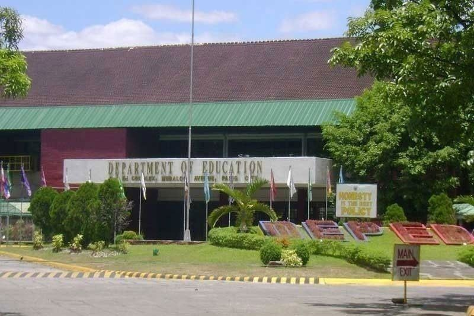

MANILA, Philippines — A national framework for regulating artificial intelligence in public schools has been presented by the Department of Education (DepEd).
At the AI Impact Summit in New Delhi, India, Education Secretary Sonny Angara said scaling AI in education must be guided by evidence and accountability.
ECAIR managing director Erika Fille Legara said the partnership with EdTech Hub’s AI Observatory “ensures we are not building in isolation. We co-design systems grounded in school realities while learning from global experience."
The Philippines is one of six countries selected for the AI Observatory’s Ministry of Education AI Challenge – the only one in Southeast Asia.
This engagement is supported by the United Kingdom’s Foreign, Commonwealth and Development Office.
The Feb. 16 to 21 summit was held at the Bharat Mandapam Convention Centre.
The Philippines is not competing with other countries in the AI race, the Department of Science and Technology said.
“We are not competing to develop the large language models that private companies or big countries have,” Science Secretary Renato Solidum Jr. said yesterday.
In a recent report from London-based think tank Capital Economics, the Philippines is lagging behind its ASEAN-5 peers in harnessing AI.
At the Manila Hotel yesterday, the DOST launched the National AI Center for Research and Innovation, which will consolidate AI-related research under the agency and serve as a platform for coordination with other state agencies. – EJ Macababbad.
Copyright © 2026 The VOYAGER. All Rights Reserved.
Elizeo Bartolome-9 Justice